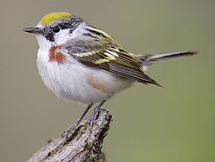
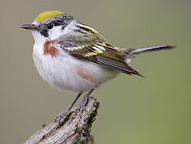

| Chestnut-sided Warbler | |
|---|---|
|  | |
| Adult female in summer plumage | |
| Conservation status | |
| Binomial name | |
| Dendroica pensylvanica (Linnaeus, 1766) |
| Chestnut-sided Warbler | |
|---|---|
|  | |
| Adult female in summer plumage | |
| Conservation status | |
| Binomial name | |
| Dendroica pensylvanica (Linnaeus, 1766) |
The Chestnut-sided Warbler (Dendroica pensylvanica) is a New World warbler. They breed in eastern North America and in southern Canada westwards to the Canadian Prairies. They also breed in the Great Lakes region and in the eastern USA.
These birds are migratory, wintering in Central America south to northern Colombia[1], with an unconfirmed sighting from as far south as Ecuador; they are also very rare vagrants to western Europe.

In the summer, male Chestnut-sided Warblers are unmistakable in appearance. They display dark-streaked gray backs, white faces, black eyestripes and greenish crowns. Their underparts are white, with chestnut flanks, and they also have two white wing bars. The adult females resemble washed-out versions of the summer male, and in particular, the females lack the strong head pattern, and also have less chestnut coloring on their flanks.
Non-breeding birds of both sexes have greenish heads, and greenish upperparts which are usually unstreaked. They also have unstreaked pale grey breasts. Their wing bars are always present in their plumages. Their lack of streaking helps to distinguish this species from the Blackpoll Warbler outside the breeding season.
The songs are whistled pleased, pleased, pleased to meecha lines. Their calls are harsh chips. Their cup-shaped nests are placed in a low bush, which is usually located in young deciduous woodland or scrub. These birds lay 3-5 eggs. Their species is frequently parasitized by cowbirds.
Chestnut-sided Warblers are insectivorous, but will include berries in their winter diets[2]. They forage actively in shrubs and small trees, and sometimes will attempt to catch insects in mid-air.
This bird's numbers have increased as second growth forest became more common in the east in the late 19th century; their numbers have declined slightly since then.

{kind=link}
{kind=link}